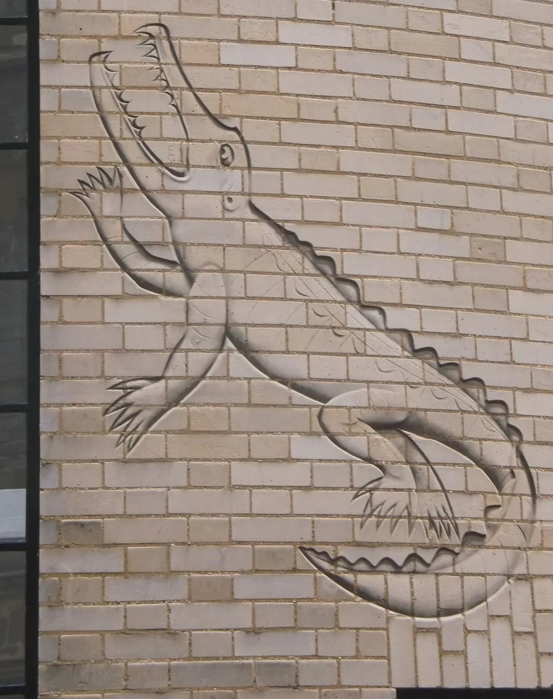
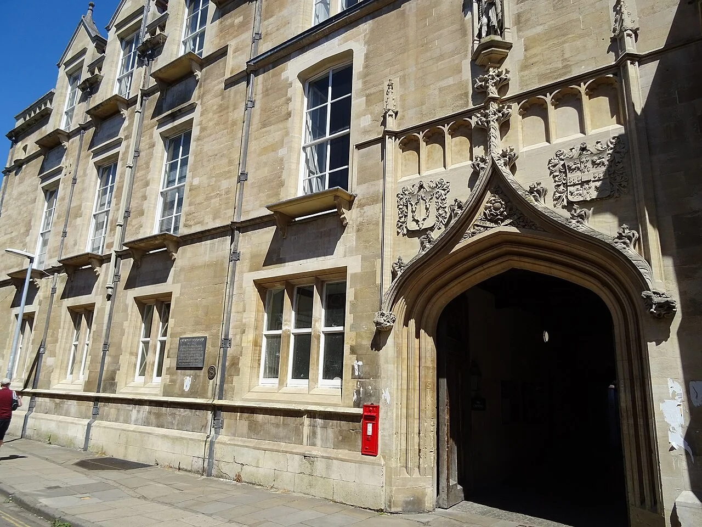
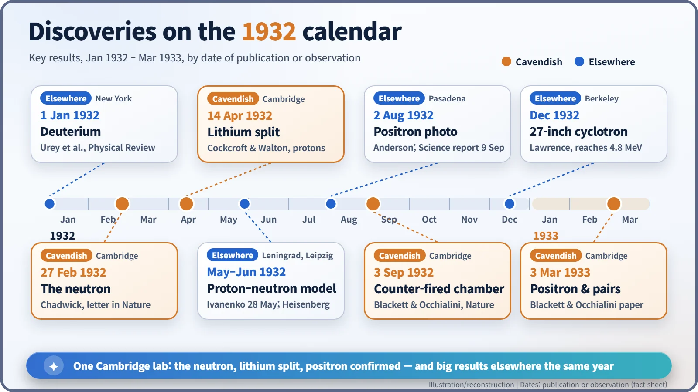

Nuclear History · 049
Fourteen Months of Sealing Wax and String — The Cavendish Laboratory's Miracle Year (1932)
A cramped old building, a tight budget and hand-made apparatus held together with sealing wax and string — and three of the year's biggest results in nuclear physics.
Between February 1932 and March 1933, one cramped laboratory in Cambridge produced the neutron, the first splitting of lithium nuclei with an accelerator, and the confirmation of the positron. This is the story not of those individual discoveries but of the place: Ernest Rutherford's Cavendish Laboratory, its "sealing wax and string" habits, its tight budget and the remarkable people who gathered there.
A crocodile on the wall
On the old science site in the middle of Cambridge, a crocodile climbs a brick wall. Its jaws are wide open and it seems to be heading for the roof. The wall belongs to the Mond Laboratory, which opened in February 1933, and the joke is in who the crocodile is supposed to be. The Russian physicist Pyotr Kapitsa (1894–1984), according to a story often told in Cambridge, called his boss Ernest Rutherford (1871–1937) "the Crocodile." In the fourteen months before that building opened, Rutherford's laboratory redrew the map of the atomic nucleus.

An old building on Free School Lane
The Cavendish Laboratory opened in 1874 on Free School Lane, paid for by the Duke of Devonshire, then chancellor of the university. Its first professor was James Clerk Maxwell. From 1919 it was run by Rutherford, the New Zealander who had discovered the atomic nucleus. [4]
In 1932 the world was deep in the Great Depression, yet young researchers kept arriving. There was John Cockcroft (1897–1967) from England, Ernest Walton (1903–1995) from Ireland, Giuseppe Occhialini (1907–1993) from Italy and Kapitsa from Russia. There was James Chadwick (1891–1974), who had spent twelve years hunting for a neutral particle in the nucleus, and Patrick Blackett (1897–1974), a master of the cloud chamber. It was a remarkable crowd for one set of rather cramped buildings.

Sealing wax, string and home by six
The phrase that clings to this laboratory is "sealing wax and string." Sealing wax is the red wax once melted onto envelopes; at the Cavendish it plugged leaky joints in glass tubing, while string held improvised apparatus together. The point was that you built your own equipment, by hand, cheaply.
Rutherford's frugality became legendary. One of his students later passed on the line "We have no money, so we have to think." It is a remark handed down by students rather than one found in Rutherford's own writings, so it is best treated as lab folklore. [3] He also reportedly sent his researchers home at six in the evening, saying that they needed time to think, though he was not relaxed about results: when the accelerator project dragged on, he pressed hard for something to show. [2]
The equipment was modest. When Cockcroft and Walton finally split lithium nuclei, they confirmed it by sitting in a small lead-lined hut and counting flashes of light on a fluorescent screen through a microscope, by eye. Their project had started with an idea rather than an expensive machine. In 1928 George Gamow explained quantum tunnelling at a Cavendish seminar, and Cockcroft worked out that protons of only about 300,000 electronvolts might get through the electrical barrier of a light nucleus. You did not need millions of volts after all. [2]
A calendar of fourteen months
The individual discoveries deserve their own stories, so here they are one line each.
- 1 January 1932 — Harold Urey's team publishes the discovery of deuterium, heavy hydrogen (New York)
- 27 February — Chadwick's letter on the neutron appears in Nature (Cambridge)
- 14 April — Cockcroft and Walton split lithium nuclei with artificially accelerated protons (Cambridge)
- May–June — Dmitri Ivanenko (28 May) and Werner Heisenberg (June) propose that nuclei are made of protons and neutrons [6]
- 2 August — Carl Anderson photographs the track of a positron, the electron's positive twin (Pasadena)
- 3 September — Blackett and Occhialini report a cloud chamber triggered by Geiger counters, so that it photographs only when a cosmic ray passes (Cambridge)
- 3 March 1933 — Their full paper confirms the positron and interprets electron–positron pair production (Cambridge) [5]
So one laboratory produced three headline results: the neutron, the splitting of lithium and the confirmation of the positron. Anderson published the positron first, so the Cavendish share there is confirmation and interpretation rather than discovery.

Meanwhile, a bigger machine across the ocean
At Berkeley, Ernest Lawrence was scaling up his cyclotron. In December 1932 a 27-inch machine reached 4.8 million electronvolts. If the Cavendish style was craftsmanship, Berkeley's was big magnets and engineering.
Cockcroft noticed the difference himself. Visiting Berkeley in 1937, he found that "sealing wax and string" had been replaced by engineering there. Cambridge changed too. A gift from the car maker Lord Austin — about a quarter of a million pounds, according to Cockcroft's recollection — paid for an extension completed in 1940. Physics was stepping into the era of big science. [1]
The label came later
Calling 1932 an annus mirabilis, a miracle year, is a later habit. [4] At the time people were simply very busy. Rutherford himself was cautious about where it might lead. In a speech reported by The Times on 12 September 1933, he said that "anyone who looked for a source of power in the transformation of the atoms was talking moonshine." [7]
Nobel Prizes followed for the people behind this work: Chadwick in 1935, Blackett in 1948, and Cockcroft and Walton in 1951. An old building, a tight budget and home-made apparatus — the Cavendish in 1932 suggests that great discoveries come less from a lone genius than from a place where people gather and their ideas collide.